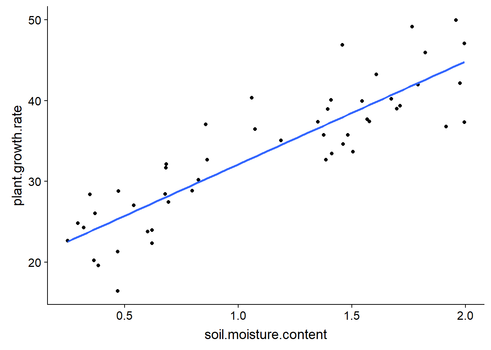
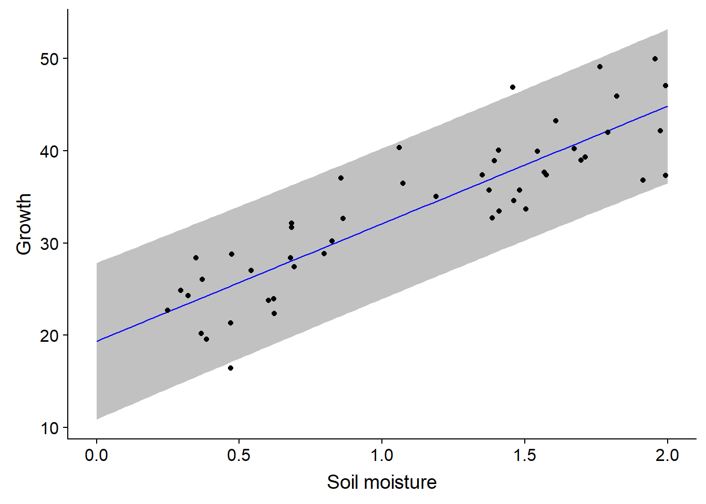
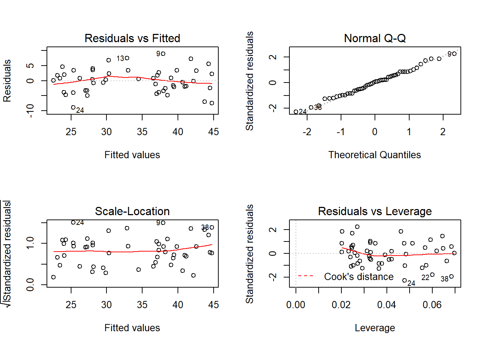
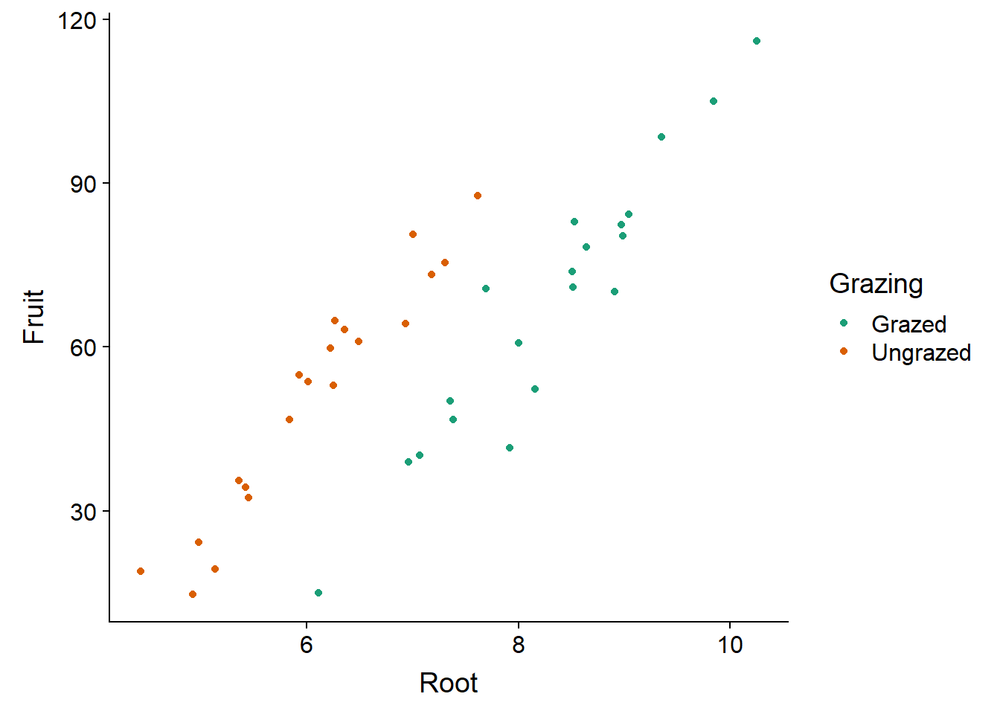
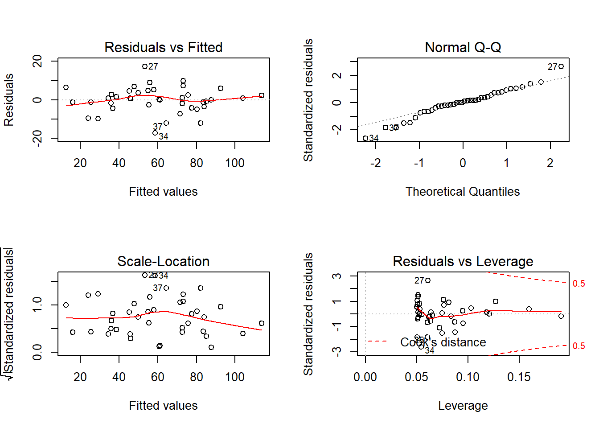
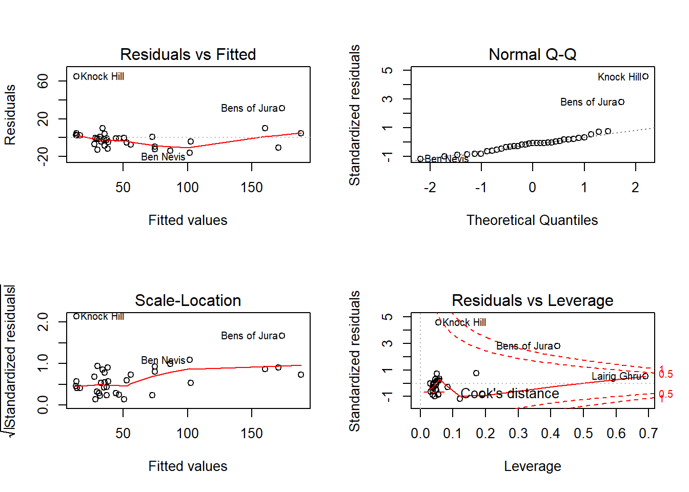

Linear regression
October 7, 2019
Objectives
Estimate and interpret the parameters of a simple linear regression and those of a multiple linear regression, with or without interactions.
Check the assumptions of a regression model from the diagnostic graphs.
Differentiate the confidence interval of a regression line and the prediction interval for new observations.
Identify problems due to the collinearity of several predictors.
Regression: Overview
The next six courses will focus on regression models. These models represent the mathematical relationship between a response variable and one or more variables named predictors.
Regression analysis is particularly useful in the following cases:
Analyzing the results of an experiment when one or more treatment variables are numeric (e.g. temperature, dose).
Separating the effect of discrete treatments (categorical variables) from that of other experimental conditions represented by numerical variables. In this context, it is often called analysis of covariance.
Determining the importance of associations between variables measured in nature (without assuming a causal link).
Using the associations between predictors and response to predict the value of the latter for new observations.
The mathematical model remains the same for all these situations, so they differ in the interpretation and use of the results.
Simple linear regression
Simple linear regression refers to the case where there is only one numerical predictor (\(x\)).
\[ y = \beta_0 + \beta_1 x + \epsilon \]
Recall that \(\beta_0\) and \(\beta_1\) are the coefficients of the regression that will be estimated from the data, while \(\epsilon\) is the random residual that follows a normal distribution centered on zero: \(N(0,\sigma)\).
This model means that for a given value of \(x\), the response \(y\) follows a normal distribution with mean \(\mu = \beta_0 + \beta_1 x\) and standard deviation \(\sigma\). The intercept \(\beta_0\) is the mean value of \(y\) when \(x = 0\), while the slope \(\beta_1\) is the mean difference of \(y\) between two observations that differ by 1 unit of \(x\).
Method of least squares
Example
The plant_growth_rate.csv dataset (from the textbook of Beckerman, Childs and Petchey, Getting Started with R, An Introduction for Biologists) contains data on the growth of a plant as a function of soil moisture content.
pgr <- read.csv("../donnees/plant_growth_rate.csv")
str(pgr)## 'data.frame': 50 obs. of 2 variables:
## $ soil.moisture.content: num 0.47 0.541 1.698 0.826 0.857 ...
## $ plant.growth.rate : num 21.3 27 39 30.2 37.1 ...Estimating the coefficients of the linear regression is equivalent to finding the line that is “closest” to the points in the graph of \(y\) vs. \(x\).
ggplot(pgr, aes(x = soil.moisture.content, y = plant.growth.rate)) +
geom_point() +
geom_smooth(method = "lm", se = FALSE)
More precisely, it is possible to show that the best unbiased estimators of linear regression parameters are those that minimize the sum of the squared residuals. This is the method of least squares.
For a series of \(n\) observations of \(x\) and \(y\), this sum of squared residuals corresponds to:
\[ \sum_{k = 1}^n \epsilon_k^2 = \sum_{k = 1}^n (y_k - (\beta_0 + \beta_1 x_k))^2 \]
The estimates \(\hat{\beta_0}\) and \(\hat{\beta_1}\) that minimize this sum are obtained by differential calculus. (They are the values for which the partial derivatives of the sum as a function of each coefficient are equal to zero.)
The estimator for the slope \(\beta_1\) is equal to the covariance of \(x\) and \(y\) divided by the variance of \(x\):
\[\hat{\beta_1} = \frac{\sum_{k = 1}^n (x_k - \bar{x})(y_k - \bar{y})}{\sum_{k = 1}^n (x_k - \bar{x})^2}\]
Here, \(\bar{x}\) and \(\bar{y}\) represent the means of \(x\) and \(y\), respectively, over all observations.
The estimator for the intercept \(\beta_0\) is equal to:
\[\hat{\beta_0} = \bar{y} - \hat{\beta_1} \bar{x}\]
By rearranging this last equation:
\[\bar{y} = \hat{\beta_0} + \hat{\beta_1} \bar{x}\]
We see that the estimated regression line goes through the point \((\bar{x}, \bar{y})\), the “center of mass” for the scatterplot of \(x\) and \(y\).
Interpreting the results
By fitting a regression model to the data above, we obtain the following result:
mod <- lm(plant.growth.rate ~ soil.moisture.content, data = pgr)
summary(mod)##
## Call:
## lm(formula = plant.growth.rate ~ soil.moisture.content, data = pgr)
##
## Residuals:
## Min 1Q Median 3Q Max
## -8.9089 -3.0747 0.2261 2.6567 8.9406
##
## Coefficients:
## Estimate Std. Error t value Pr(>|t|)
## (Intercept) 19.348 1.283 15.08 <2e-16 ***
## soil.moisture.content 12.750 1.021 12.49 <2e-16 ***
## ---
## Signif. codes: 0 '***' 0.001 '**' 0.01 '*' 0.05 '.' 0.1 ' ' 1
##
## Residual standard error: 4.019 on 48 degrees of freedom
## Multiple R-squared: 0.7648, Adjusted R-squared: 0.7599
## F-statistic: 156.1 on 1 and 48 DF, p-value: < 2.2e-16The coefficient table includes the intercept and the effect of each predictor. If the assumptions of the model are respected (see section below), each estimated \(\hat{\beta}\) follows a normal distribution with a mean equal to the value of the parameter \(\beta\), and a standard error as shown in the table. This allows us to run a \(t\)-test for the null hypothesis \(\beta = 0\), with a value \(p\) indicated in the last column.
Under that table, Residual standard error is the standard deviation of model residuals calculated with 48 degrees of freedom (50 observations - 2 estimated parameters).
sqrt(sum(mod$residuals^2) / 48)## [1] 4.019094As in ANOVA, the coefficient of determination (\(R^2\)) represents the fraction of total variance explained by the model.
\[R^2 = 1 - \frac{\sum_{k=1}^n (y_k - \hat{y_k})^2}{\sum_{k=1}^n (y_k - \bar{y})^2}\]
The numerator is the sum of squared residuals, since \(\hat{y_k} = \hat{\beta_0} + \hat{\beta_1} x_k\) is the expected value (mean) \(y_k\) according to the model.
r2 <- 1 - sum(mod$residuals^2) / sum((pgr$plant.growth.rate - mean(pgr$plant.growth.rate))^2)
r2## [1] 0.764796The values of \(\hat{y_k}\) for each point are recorded in the fitted.values component of the result of lm (e.g. mod$fitted.values).
For a simple linear regression, the square root of \(R^2\) is equal to the correlation between \(x\) and \(y\).
cor_pgr <- cor(pgr$soil.moisture.content, pgr$plant.growth.rate)
all.equal(cor_pgr, sqrt(r2))## [1] TRUENote: When comparing real numbers in R, it is better to use all.equal than ==. Due to the limited accuracy of the calculations, the two values are in fact almost equal, so the exact equality == would return FALSE.
cor_pgr - sqrt(r2)## [1] 1.110223e-16The last line of the summary is an \(F\)-test similar to ANOVA. When we have only one predictor, this test gives the same information as the \(t\)-test for that predictor: the probability of obtaining an estimated effect that far from 0 if the actual effect of the predictor is 0.
Confidence interval and prediction interval
To display the regression line on a scatter plot of \(x\) and \(y\), along with its confidence interval, we use the geom_smooth function of the ggplot2 package, with the lm (linear model) method.
ggplot(pgr, aes(x = soil.moisture.content, y = plant.growth.rate)) +
geom_point() +
geom_smooth(method = "lm")
For each value of \(x\), the gray area gives a confidence interval for the average value of \(y\) according to the linear model. By default, this is a 95% interval, which can be changed with the level argument of geom_smooth.
Note that the confidence interval becomes wider at the ends of the graph. Remember that the regression line must pass through the point \((\bar{x}, \bar {y})\), so the uncertainty on the slope “rotates” the line slightly around this point, which generates greater uncertainty at the ends.
Suppose that in addition to estimating the average trend between \(x\) and \(y\), we want to predict the value of \(y\) for new observations, knowing only the value of \(x\). In the code below, we create a new pgr_nouv data array with 101 soil moisture values, and then we call the predict function to get growth predictions from the model, with a prediction interval. We then attach these columns to pgr_nouv with cbind.
pgr_nouv <- data.frame(soil.moisture.content = seq(0, 2, 0.02))
pgr_pred <- predict(mod, pgr_nouv, interval = "prediction")
pgr_nouv <- cbind(pgr_nouv, pgr_pred)
str(pgr_nouv)## 'data.frame': 101 obs. of 4 variables:
## $ soil.moisture.content: num 0 0.02 0.04 0.06 0.08 0.1 0.12 0.14 0.16 0.18 ...
## $ fit : num 19.3 19.6 19.9 20.1 20.4 ...
## $ lwr : num 10.9 11.1 11.4 11.7 11.9 ...
## $ upr : num 27.8 28.1 28.3 28.6 28.8 ...The fit column contains the predicted values (which correspond to the points on the regression line) while lwr and upr are the lower and upper limits of the 95% prediction interval.
Now let’s superimpose the regression line, the prediction interval (with geom_ribbon) and the scatter plot:
ggplot(pgr_nouv, aes(x = soil.moisture.content)) +
labs(x = "Soil moisture", y = "Growth") +
geom_ribbon(aes(ymin = lwr, ymax = upr), alpha = 0.3) +
geom_line(aes(y = fit), color = "blue") +
geom_point(data = pgr, aes(y = plant.growth.rate))
In contrast to the confidence interval, which represents the uncertainty in the mean value of the response for a certain predictor value, the prediction interval represents the uncertainty in the value of the response for an individual observation. Thus, it is expected that about 95% of the points are within the prediction interval, which is the case here (48/50).
Note: In general, it is not prudent to use the result of a regression to predict the response for predictor values outside the range of values with which the model was estimated (in this example, for soil moisture values > 2). These extrapolations are less reliable than predictions within the range of observed values (interpolation). In particular, an approximately linear relation on a restricted scale of values of \(x\) can become strongly non-linear at a different scale.
Assumptions of the linear regression model
As for ANOVA, the residuals are:
- independent and
- normally distributed
- with the same variance.
Moreover:
- the relationship between the average response and the predictors is linear, and
- the predictors are measured without error (or this error is negligible compared to the other errors of the model).
Linearity
The linearity requirement is less restrictive than it seems. Variable transformations make it possible to convert a non-linear relationship into a linear relationship. For example, if \(y\) is a function of a certain power of \(x\):
\[ y = a x^b \]
then by applying a logarithm to each side, we obtain a linear model:
\[ \log(y) = \log(a) + b \log(x) \]
In general, the equation linking \(x\) and \(y\) can contain nonlinear functions of \(x\), as long as it is a linear function of the coefficients. For example, the quadratric equation:
\[ y = \beta_0 + \beta_1 x + \beta_2 x^2 \] is an example of a linear model; it is a multiple linear regression, since there are two predictors, \(x\) and \(x^2\).
Independence of residuals
The independence of residuals means that the portion of the response \(y\) not explained by the predictors \(x\) is independent from one observation to another.
In ecology, the non-independence of residuals is often due to a proximity of certain observations in space and time. For example, if the observations are spread over several days, observations that are closer in time may be more similar. Factors that can cause this temporal dependence (e.g., weather) can be included in the model to obtain the most independent residuals possible.
The non-independence of residuals does not bias the estimates of the model coefficients, so these remain valid, but their uncertainty will be underestimated. (We could say that a sample of non-independent observations is equivalent to a smaller independent sample.) Thus, the confidence intervals and hypothesis tests on the significance of the coefficients will not be valid.
Diagnostic graphs
Here are the four diagnostic graphs obtained with the plot function applied to the result of lm.

The first two graphs correspond to those already seen in ANOVA. For the graph of residuals vs. fitted values, here are important points to check:
The residuals must be randomly dispersed around zero. The presence of a trend (linear or not) indicates systematic effects ignored by the model. In this case, we may have a slight non-linear (quadratic) trend in the residuals.
The variance of the residuals must be approximately constant (homoscedasticity). A common type of heteroscedasticity occurs when the variance increases with the mean. In this case, the graph of the residuals vs. fitted values produces a funnel shape (dispersion of points increases along the \(x\) axis).
The quantile-quantile plot makes it possible to detect systematic deviations from the normality of the residuals.
The third graph shows the scale of the residuals (in absolute value) according to the fitted values of \(y\). This graph will also show a trend if the variance is not constant.
Leverage
The last chart shows the leverage of observations relative to the value of the residuals. An observation with high leverage has a greater influence on the regression coefficient estimates; this occurs most often in the case of isolated observations and far from the mean values of the predictors. An observation far from the mean (significant positive or negative residual) that also has a strong leverage effect may move the regression line away from the general trend indicated by the other data.
Cook’s distance \(D\) is a metric that combines leverage with the magnitude of the residual. The dashed lines on the fourth graph identify problematic points that exceed a certain value of \(D\), usually \(D > 1\). In our previous example, no point has a large influence, so these dotted lines are outside the visible part of the graph.
Multiple linear regression
The multiple linear regression model represents the relationship between a response variable and \(m\) predictors \(x_1\), \(x_2\), …, \(x_m\).
\[ y = \beta_0 + \beta_1 x_1 + \beta_2 x_2 + ... + \beta_m x_m + \epsilon = \beta_0 + \sum_{i = 1}^m \beta_i x_i + \epsilon \] As in the case of simple linear regression, the \(\beta\) coefficients can be computed from the method of least squares. In this model, each \(\beta_i\) coefficient (except \(\beta_0\)) is the partial derivative of \(y\) with respect to a predictor \(x_i\). In other words, this coefficient represents the mean change in \(y\) if \(x_i\) increases by 1 and all other predictors remain constant.
Analysis of covariance
We will first consider a model including a categorical predictor and a numerical predictor. In an experimental context, this type of model is called an analysis of covariance (ANCOVA).
The data frame compensation.csv is taken from Crawley’s book, Statistics: An introduction using R. It contains data on seed mass produced by a plant species (Fruit) based on root size (Root) and whether or not the plant is grazed (Grazing).
comp <- read.csv("../donnees/compensation.csv")
str(comp)## 'data.frame': 40 obs. of 3 variables:
## $ Root : num 6.22 6.49 4.92 5.13 5.42 ...
## $ Fruit : num 59.8 61 14.7 19.3 34.2 ...
## $ Grazing: Factor w/ 2 levels "Grazed","Ungrazed": 2 2 2 2 2 2 2 2 2 2 ...Let’s first inspect the data.
ggplot(comp, aes(x = Root, y = Fruit, color = Grazing)) +
geom_point() +
scale_color_brewer(palette = "Dark2")
The graph shows the existence of a linear relationship between root size and seed production, as well as the effect of treatment: for the same root size, grazing reduces seed production. Note that if we had not measured the roots, we might think that grazing has a positive effect.
ggplot(comp, aes(x = Grazing, y = Fruit)) +
geom_boxplot()
This is because the plants undergoing grazing had (on average) larger roots initially. Root size is therefore a confounding variable that must be taken into account in order to properly assess the effect of grazing.
Here is a linear model where the effect of the two predictors is additive:
mod_comp <- lm(Fruit ~ Grazing + Root, data = comp)
summary(mod_comp)##
## Call:
## lm(formula = Fruit ~ Grazing + Root, data = comp)
##
## Residuals:
## Min 1Q Median 3Q Max
## -17.1920 -2.8224 0.3223 3.9144 17.3290
##
## Coefficients:
## Estimate Std. Error t value Pr(>|t|)
## (Intercept) -127.829 9.664 -13.23 1.35e-15 ***
## GrazingUngrazed 36.103 3.357 10.75 6.11e-13 ***
## Root 23.560 1.149 20.51 < 2e-16 ***
## ---
## Signif. codes: 0 '***' 0.001 '**' 0.01 '*' 0.05 '.' 0.1 ' ' 1
##
## Residual standard error: 6.747 on 37 degrees of freedom
## Multiple R-squared: 0.9291, Adjusted R-squared: 0.9252
## F-statistic: 242.3 on 2 and 37 DF, p-value: < 2.2e-16Results interpretation
If \(x_1\) is the grazing variable (0 = Grazed, 1 = Ungrazed according to the default encoding in R) and \(x_2\) is the root size, the mathematical expression of this model is:
\[ y = \beta_0 + \beta_1 x_1 + \beta_2 x_2 + \epsilon \]
To simplify the interpretation of the coefficients, we separate the case with grazing (\(x_1 = 0\)):
\[ y = \beta_0 + \beta_2 x_2 + \epsilon \]
and the case without grazing (\(x_1 = 1\)):
\[ y = \beta_0 + \beta_1 + \beta_2 x_2 + \epsilon \]
The coefficients can now be interpreted as follows:
- \(\beta_0\) (
Interceptin the summary table) is the intercept of the Fruit vs. Root regression line with grazing. - \(\beta_1\) (
GrazingUngrazed) is the effect of the absence of grazing on the intercept of the Fruit vs. Root line. - \(\beta_2\) (
Root) is the slope of the Fruit vs. Root regression line with or without grazing.
Since the slope is the same with or without grazing, the coefficient \(\beta_1\) corresponds to a translation on the \(y\) axis of the regression line. This model of the additive effects of a treatment and a numerical variable thus results in two parallel lines, which corresponds quite well to our visualization of the data. In addition, the value of \(R^2\) (0.93) indicates that the model accounts for much of the observed variation in the data.
Even a large value of \(R^2\) does not necessarily mean that the model is appropriate. Always look at the diagnostic charts.

Note that some extreme points are labelled with the corresponding row number in the data frame, to facilitate the identification of problematic points.
The \(F\)-test reported at the bottom of the results summary of lm corresponds to the null hypothesis of no effect for all predictors.
We can also obtain a conventional ANOVA table by applying the anova function to the lm result.
anova(mod_comp)## Analysis of Variance Table
##
## Response: Fruit
## Df Sum Sq Mean Sq F value Pr(>F)
## Grazing 1 2910.4 2910.4 63.929 1.397e-09 ***
## Root 1 19148.9 19148.9 420.616 < 2.2e-16 ***
## Residuals 37 1684.5 45.5
## ---
## Signif. codes: 0 '***' 0.001 '**' 0.01 '*' 0.05 '.' 0.1 ' ' 1Model with interaction
As in ANOVA, we can include the interaction between two variables with the multiplication symbol *:
mod_comp_inter <- lm(Fruit ~ Grazing * Root, data = comp)
summary(mod_comp_inter)##
## Call:
## lm(formula = Fruit ~ Grazing * Root, data = comp)
##
## Residuals:
## Min 1Q Median 3Q Max
## -17.3177 -2.8320 0.1247 3.8511 17.1313
##
## Coefficients:
## Estimate Std. Error t value Pr(>|t|)
## (Intercept) -125.173 12.811 -9.771 1.15e-11 ***
## GrazingUngrazed 30.806 16.842 1.829 0.0757 .
## Root 23.240 1.531 15.182 < 2e-16 ***
## GrazingUngrazed:Root 0.756 2.354 0.321 0.7500
## ---
## Signif. codes: 0 '***' 0.001 '**' 0.01 '*' 0.05 '.' 0.1 ' ' 1
##
## Residual standard error: 6.831 on 36 degrees of freedom
## Multiple R-squared: 0.9293, Adjusted R-squared: 0.9234
## F-statistic: 157.6 on 3 and 36 DF, p-value: < 2.2e-16If \(x_1\) is the grazing variable (0 = Grazed, 1 = Ungrazed according to the default encoding in R) and \(x_2\) is the root size, the mathematical expression of this model is:
\[ y = \beta_0 + \beta_1 x_1 + \beta_2 x_2 + \beta_{12} x_1 x_2 + \epsilon \]
The interaction is thus equivalent to adding a new predictor to the model, equal to the product of the two interacting variables. Let’s separate again into two equations according to the treatment:
With grazing (\(x_1 = 0\)):
\[ y = \beta_0 + \beta_2 x_2 \]
Without grazing (\(x_1 = 1\)):
\[ y = (\beta_0 + \beta_1) + (\beta_2 + \beta_{12}) x_2 \]
For this model with interaction, the interpretation of the coefficients changes a bit:
- \(\beta_0\) (
Interceptin the summary table) is the intercept of the Fruit vs. Root line without grazing. - \(\beta_1\) (
GrazingUngrazed) is the effect of the absence of grazing on the intercept of Fruit vs. Root. - \(\beta_2\) (
Root) is the slope of the Fruit vs. Root line with grazing. - \(\beta_{12}\) (
GrazingUngrazed:Root) is the effect of the absence of grazing on the slope of the Fruit vs. Root line.
The interaction model is therefore equivalent to separately estimating the regression line (intercept and slope) for each of the two treatments.
Compared to the additive model, note that the effect of no grazing (GrazingUngrazed) now has a much higher standard error and a larger \(p\) value.
summary(mod_comp)$coefficients## Estimate Std. Error t value Pr(>|t|)
## (Intercept) -127.82936 9.664095 -13.22725 1.349804e-15
## GrazingUngrazed 36.10325 3.357396 10.75335 6.107286e-13
## Root 23.56005 1.148771 20.50892 8.408231e-22summary(mod_comp_inter)$coefficients## Estimate Std. Error t value Pr(>|t|)
## (Intercept) -125.1730569 12.811165 -9.7706222 1.150540e-11
## GrazingUngrazed 30.8057049 16.841823 1.8291194 7.567489e-02
## Root 23.2403732 1.530771 15.1821314 3.173208e-17
## GrazingUngrazed:Root 0.7560338 2.354111 0.3211547 7.499503e-01This is because the intercept, corresponding to Root = 0, is far from the data range (Root values are all between 4 and 11). Therefore, a small change of slope in the middle of the graph can lead to a significant change in intercept and the uncertainty of the interaction coefficient (difference in slope) also affects the estimate of the difference in intercept.
By consulting the ANOVA table, we can confirm that the interaction is not significant, the additive model is therefore preferable.
anova(mod_comp_inter)## Analysis of Variance Table
##
## Response: Fruit
## Df Sum Sq Mean Sq F value Pr(>F)
## Grazing 1 2910.4 2910.4 62.3795 2.262e-09 ***
## Root 1 19148.9 19148.9 410.4201 < 2.2e-16 ***
## Grazing:Root 1 4.8 4.8 0.1031 0.75
## Residuals 36 1679.6 46.7
## ---
## Signif. codes: 0 '***' 0.001 '**' 0.01 '*' 0.05 '.' 0.1 ' ' 1Why is the effect of grazing significant here? In the ANOVA table, we test whether there is a significant difference in the mean of Fruit between plants that are grazed or not, rather than whether there is a significant difference in intercept between two lines (which is what GrazingUngrazed measures in the linear model).
Regression with multiple numerical predictors
The hills data frame in the MASS package (included by default with R) contains the record times (time, in minutes) for Scottish bike races based on the horizontal distance (dist, in miles) and the total change in altitude (climb, in feet).
library(MASS)
str(hills)## 'data.frame': 35 obs. of 3 variables:
## $ dist : num 2.5 6 6 7.5 8 8 16 6 5 6 ...
## $ climb: int 650 2500 900 800 3070 2866 7500 800 800 650 ...
## $ time : num 16.1 48.4 33.6 45.6 62.3 ...For a data frame with multiple numeric variables, the plot function displays a matrix of scatter plots for each pair of variables.
plot(hills)
The record times seem to depend linearly on the distance and the climb. (The distance and climb also seem to be correlated, we will come back to this later.) We therefore apply a linear model to these data.
mod_hills <- lm(time ~ dist + climb, hills)
Since the rows in this data frame are labelled (rownames) in R, those labels appear next to the extreme values in the diagnostic graphs.
According to these graphs, two races (Knock Hill and Bens of Jura) have a record time much longer than expected (significant positive residual). These same points also have a great influence on the regression coefficients (according to the fourth graph). In this case, it would be recommended to check if these routes have peculiarities which explain this large difference compared to the model.
Standardization of variables
Let’s look at the summary results:
summary(mod_hills)##
## Call:
## lm(formula = time ~ dist + climb, data = hills)
##
## Residuals:
## Min 1Q Median 3Q Max
## -16.215 -7.129 -1.186 2.371 65.121
##
## Coefficients:
## Estimate Std. Error t value Pr(>|t|)
## (Intercept) -8.992039 4.302734 -2.090 0.0447 *
## dist 6.217956 0.601148 10.343 9.86e-12 ***
## climb 0.011048 0.002051 5.387 6.45e-06 ***
## ---
## Signif. codes: 0 '***' 0.001 '**' 0.01 '*' 0.05 '.' 0.1 ' ' 1
##
## Residual standard error: 14.68 on 32 degrees of freedom
## Multiple R-squared: 0.9191, Adjusted R-squared: 0.914
## F-statistic: 181.7 on 2 and 32 DF, p-value: < 2.2e-16The values of the coefficients mean that on average, each mile of distance adds 6.22 minutes to the record time while each foot of elevation adds 0.01 minute. Since the predictors do not have the same units, the value of the coefficients is not indicative of the importance of each variable. In this case, dist varies between 2 and 28 miles whereas climb varies between 300 and 7500 feet.
Also, the intercept is not meaningful, since a route cannot have a length of 0.
In order to compare the influence of different predictors, it may be useful to standardize these, that is, to transform each value by subtracting the mean and dividing by the standard deviation. In R, the scale function automatically performs this transformation.
hills_scl <- hills
hills_scl[, -3] <- scale(hills_scl[, -3]) # we don't standardize the response
mod_hills_scl <- lm(time ~ dist + climb, data = hills_scl)
summary(mod_hills_scl)##
## Call:
## lm(formula = time ~ dist + climb, data = hills_scl)
##
## Residuals:
## Min 1Q Median 3Q Max
## -16.215 -7.129 -1.186 2.371 65.121
##
## Coefficients:
## Estimate Std. Error t value Pr(>|t|)
## (Intercept) 57.876 2.481 23.331 < 2e-16 ***
## dist 34.348 3.321 10.343 9.86e-12 ***
## climb 17.888 3.321 5.387 6.45e-06 ***
## ---
## Signif. codes: 0 '***' 0.001 '**' 0.01 '*' 0.05 '.' 0.1 ' ' 1
##
## Residual standard error: 14.68 on 32 degrees of freedom
## Multiple R-squared: 0.9191, Adjusted R-squared: 0.914
## F-statistic: 181.7 on 2 and 32 DF, p-value: < 2.2e-16For each point, the standardized variable represents the deviation of the original variable from its mean, expressed as a multiple of the standard deviation of the original variable. For example, in this version of the model, the coefficient of dist indicates the difference in record time associated with an increase of one standard deviation in the horizontal distance. The standardized coefficients thus represent the effect of a variable relative to the typical differences observed for that variable.
Another advantage of this representation is that, since the standardized predictors take a value of 0 at their mean, the value of the intercept is the overall mean of the response (here the mean record time is about 58 minutes).
The standardization of predictors only changes the scale of the estimated effects. The significance of the effect of each predictor and the predictions of the model remain the same.
Interaction between continuous variables
How to interpret the interaction between two continuous variables? For example:
mod_hills_inter <- lm(time ~ dist * climb, hills_scl)
summary(mod_hills_inter)##
## Call:
## lm(formula = time ~ dist * climb, data = hills_scl)
##
## Residuals:
## Min 1Q Median 3Q Max
## -25.994 -4.968 -2.220 2.381 56.115
##
## Coefficients:
## Estimate Std. Error t value Pr(>|t|)
## (Intercept) 52.304 2.793 18.728 < 2e-16 ***
## dist 32.776 2.965 11.053 2.78e-12 ***
## climb 10.411 3.742 2.782 0.00911 **
## dist:climb 8.793 2.745 3.203 0.00314 **
## ---
## Signif. codes: 0 '***' 0.001 '**' 0.01 '*' 0.05 '.' 0.1 ' ' 1
##
## Residual standard error: 12.92 on 31 degrees of freedom
## Multiple R-squared: 0.9392, Adjusted R-squared: 0.9333
## F-statistic: 159.6 on 3 and 31 DF, p-value: < 2.2e-16As we saw earlier, the equation for a model with two interacting predictors is:
\[ y = \beta_0 + \beta_1 x_1 + \beta_2 x_2 + \beta_{12} x_1 x_2 + \epsilon \]
We can rewrite this equation in two ways:
\[ y = \beta_0 + (\beta_1 + \beta_{12} x_2) x_1 + \beta_2 x_2 \]
\[ y = \beta_0 + \beta_1 x_1 + (\beta_2 + \beta_{12} x_1) x_2 \]
- \(\beta_0\) is the value of \(y\) if \(x_1 = 0\) and \(x_2 = 0\);
- \(\beta_1\) is the effect on \(y\) of a unit increase in \(x_1\) if \(x_2 = 0\);
- \(\beta_2\) is the effect on \(y\) of a unit increase in \(x_2\) if \(x_1 = 0\);
- \(\beta_{12}\) is both the change in slope of \(y\) vs. \(x_1\) if \(x_2\) increases by 1, and the change in slope of \(y\) vs. \(x_2\) if \(x_1\) increases by 1.
Collinearity
For the hills data set, the two predictors (dist and climb) are themselves correlated.
cor(hills$dist, hills$climb)## [1] 0.6523461The correlation between two predictors complicates the estimation of the effects of each predictor. Since the model coefficients represent the effect of one predictor when the others remain constant, when several of them vary together, it becomes difficult to isolate the effect of each. This problem is generalized to models with more than two predictors, if one of the predictors is correlated with a linear combination of the other predictors: this is called collinearity.
The vif function of the car package calculates the variance inflation factor (VIF) of each predictor.
library(car)
vif(mod_hills)## dist climb
## 1.740812 1.740812The VIF is equal to \(1 - 1/R^2\), where \(R^2\) is the coefficient of determination of a linear model of the predictor considered as a function of all the others. For example, if one of the predictors can be determined from the value of the others with a $R^2 $ of 0.9, VIF = 10. When the VIF of some predictors exceeds 10, it is recommended to eliminate one of the redundant predictors.
Example
The msleep data frame included with the ggplot package contains sleep data for different mammal species. We choose three columns corresponding to total sleep time, body weight and brain weight.
msleep2 <- dplyr::select(msleep, sleep_total, bodywt, brainwt)
summary(msleep2)## sleep_total bodywt brainwt
## Min. : 1.90 Min. : 0.005 Min. :0.00014
## 1st Qu.: 7.85 1st Qu.: 0.174 1st Qu.:0.00290
## Median :10.10 Median : 1.670 Median :0.01240
## Mean :10.43 Mean : 166.136 Mean :0.28158
## 3rd Qu.:13.75 3rd Qu.: 41.750 3rd Qu.:0.12550
## Max. :19.90 Max. :6654.000 Max. :5.71200
## NA's :27The bodywt and brainwt variables are very asymmetrical and vary over several orders of magnitude, thus we perform a logarithmic transformation of the three variables.
msleep2 <- log(msleep2)On a logarithmic scale, bodywt and brainwt are strongly correlated.
plot(msleep2)
Here is what happens if we fit a linear model using one or both of the predictors.
summary(lm(sleep_total ~ bodywt, data = msleep2))##
## Call:
## lm(formula = sleep_total ~ bodywt, data = msleep2)
##
## Residuals:
## Min 1Q Median 3Q Max
## -0.9757 -0.2712 -0.0096 0.2727 1.0004
##
## Coefficients:
## Estimate Std. Error t value Pr(>|t|)
## (Intercept) 2.31575 0.04647 49.830 < 2e-16 ***
## bodywt -0.10265 0.01389 -7.388 1.19e-10 ***
## ---
## Signif. codes: 0 '***' 0.001 '**' 0.01 '*' 0.05 '.' 0.1 ' ' 1
##
## Residual standard error: 0.4097 on 81 degrees of freedom
## Multiple R-squared: 0.4026, Adjusted R-squared: 0.3952
## F-statistic: 54.58 on 1 and 81 DF, p-value: 1.193e-10summary(lm(sleep_total ~ brainwt, data = msleep2))##
## Call:
## lm(formula = sleep_total ~ brainwt, data = msleep2)
##
## Residuals:
## Min 1Q Median 3Q Max
## -0.89025 -0.27043 -0.01841 0.30664 0.88271
##
## Coefficients:
## Estimate Std. Error t value Pr(>|t|)
## (Intercept) 1.69551 0.10037 16.892 < 2e-16 ***
## brainwt -0.12640 0.02103 -6.011 1.64e-07 ***
## ---
## Signif. codes: 0 '***' 0.001 '**' 0.01 '*' 0.05 '.' 0.1 ' ' 1
##
## Residual standard error: 0.3943 on 54 degrees of freedom
## (27 observations deleted due to missingness)
## Multiple R-squared: 0.4009, Adjusted R-squared: 0.3898
## F-statistic: 36.13 on 1 and 54 DF, p-value: 1.637e-07summary(lm(sleep_total ~ bodywt + brainwt, data = msleep2))##
## Call:
## lm(formula = sleep_total ~ bodywt + brainwt, data = msleep2)
##
## Residuals:
## Min 1Q Median 3Q Max
## -0.92817 -0.25572 -0.01949 0.28150 1.01779
##
## Coefficients:
## Estimate Std. Error t value Pr(>|t|)
## (Intercept) 2.317881 0.382108 6.066 1.42e-07 ***
## bodywt -0.105861 0.062787 -1.686 0.0977 .
## brainwt 0.002517 0.079212 0.032 0.9748
## ---
## Signif. codes: 0 '***' 0.001 '**' 0.01 '*' 0.05 '.' 0.1 ' ' 1
##
## Residual standard error: 0.3877 on 53 degrees of freedom
## (27 observations deleted due to missingness)
## Multiple R-squared: 0.4314, Adjusted R-squared: 0.4099
## F-statistic: 20.1 on 2 and 53 DF, p-value: 3.181e-07Compare the standard errors of the coefficients of the third model with those for each of the predictors considered separately. We can confirm that these variables are collinear with vif.
vif(lm(sleep_total ~ bodywt + brainwt, data = msleep2))## bodywt brainwt
## 14.67386 14.67386If you need to keep only one of the two variables of the model, which one to choose? We will discuss this problem during the class on model selection.
Summary
The
lmfunction fits a linear regression model in R.In a multiple linear regression (without interaction), the coefficient associated with a predictor measures the effect of a unit variation of the predictor on the response, if the other predictors remain constant.
For a model without interaction, the effect of a categorical variable can be represented by a translation of the regression line between the treatments.
The variance inflation factor (VIF) indicates whether the value of a predictor is strongly correlated with that of the other predictors. A high VIF makes it difficult to estimate coefficients for correlated predictors.
The confidence interval of a regression line represents the uncertainty on the average value of \(y\) for given values of the predictors. The prediction interval represents the uncertainty about the value of a future observation of \(y\), knowing the value of the predictors.